01Getting started
Set MeetChat up now, while everything works, and make your chats before you need them. Joining a chat needs the other person’s QR code or invite link, so you can’t join one in the middle of an emergency if you never met.
- Open MeetChat, type your name and tap Start. People in your chats see this name above your messages.
- When the phone asks, allow Bluetooth, Local Network (iPhone), Nearby devices (Android) and Notifications. Without them MeetChat can’t reach phones nearby or a Meshtastic radio, or tell you about new messages.
- Put your phone number in ⚙︎ Settings. MeetChat needs it to send text messages, and gives it to the people in your chats so their texts reach you (chapter 06).
- Start a chat, or join one (chapter 03).
No account. MeetChat has no sign-up. Your name, your number and your chats stay on your phone, and only the people in your chats see them.
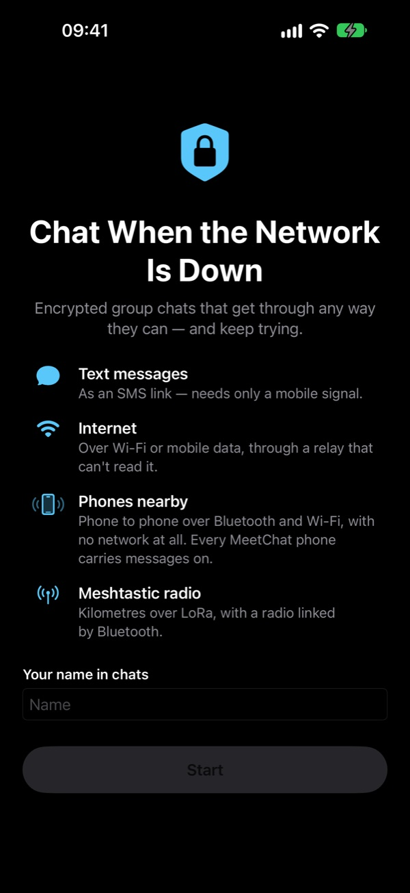
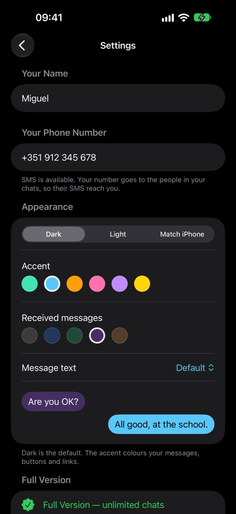
Settings
The gear at the top left of the chat list opens Settings:
- Your Name and Your Phone Number. Without a number, SMS shows as unavailable.
- Appearance: dark or light, the accent colour, the colour of received messages and the text size.
- Full Version (chapter 11).
- Networks: the internet relay (chapter 10) and the Meshtastic radio (chapter 09).
- About MeetChat: the emergency notice, trademarks and open-source licences.
02The four networks
At the top of the chat list, Networks shows four icons: SMS, Internet, Nearby and Radio. Their colour says which work right now.
Green: working now. Orange: waiting, for example no phones in range yet. Grey: not available, for example no number in Settings for SMS. An icon that’s struck through is switched off.
When you tap Send, the message goes out on every network that works at that moment (SMS has its own button). On networks that aren’t working, it waits and goes out as soon as they are. A message that reaches your phone one way is passed on the other ways, so it can jump from the radio to the internet or from the internet to phones nearby.
Tap the icons for the Networks page, with each network in words. Touch and hold a network there to switch it off or on, for example to test a single network or to save battery.
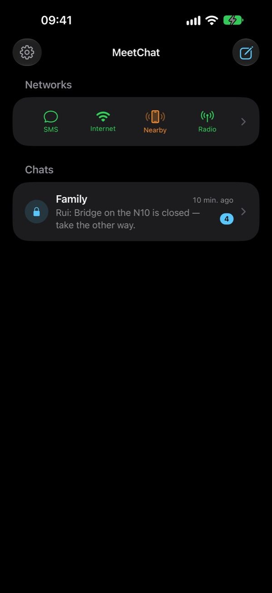
| Network | Needs | Reach | Chapter |
|---|---|---|---|
| Text messages · SMS | A mobile signal (no internet) and your number in Settings. You press Send in your messages app yourself. | Anywhere with a signal | 06 |
| Internet | Wi-Fi or mobile data | The world | 10 |
| Phones nearby | Nothing: Bluetooth and Wi-Fi, phone to phone | Tens of metres per hop, further as phones move | 07 |
| Meshtastic radio | A Meshtastic radio linked over Bluetooth | Kilometres over LoRa | 09 |
03Chats and invites
A chat is a group of people who share one secret key. Each chat has its own key, so people in one chat can’t read another. The free version has one chat, with no limit on people or messages; the Full Version has as many as you like (chapter 11).
Start a chat
- Tap ✎ (top right), then New Chat.
- Type a name, for example Neighbours, and tap Create. A new 256-bit key is made on your phone, just for this chat.
- The invite opens straight away (next step).
The same menu has Join a Chat and New Radio Chat (chapter 09). The chat name is only a label: each person can rename their copy without changing anything for the others.
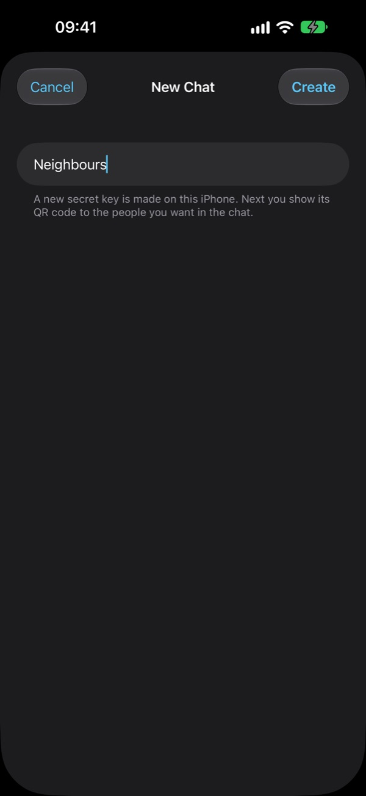
Invite people
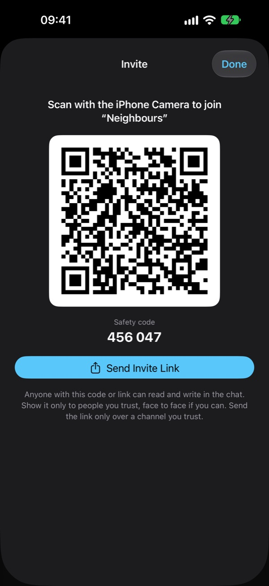
- Show the QR code. The other person taps ✎ → Join a Chat → Scan QR Code in MeetChat and points the camera at it. (The iPhone Camera app works too.)
- MeetChat asks Join “Neighbours”? and shows the safety code. They check that it matches yours and tap Join.
- Can’t meet? Tap Send Invite Link and send it in a way you trust. Tapping the link joins in the same way.
The QR code is the key. Anyone who has it, or a photo of it, or the link, can read and write in the chat. Show it face to face if you can, and only to people you trust.
To show the invite again later, open the chat and tap the people icon, then Add People. Anyone in the chat can invite others.
Join with a copied link
If an invite link can’t be tapped, for example because it was pasted into a note, copy it, then in MeetChat tap ✎ → Join a Chat → Paste.
People and chat info
The people icon in a chat lists everyone MeetChat has heard from in it, with how they are and when they were last heard. The ⓘ icon opens chat info: invite people, rename the chat, the numbers that get your SMS (chapter 06), the safety code, and Delete Chat, which deletes the key and the messages from your phone. Coming back needs a new invite from someone in the chat.
Every chat you start or join appears in the list, newest message first, with the number of unread messages. A message only shows up in the chat whose key opens it. On its way it may pass through phones that aren’t in that chat: they carry it but can’t read it.
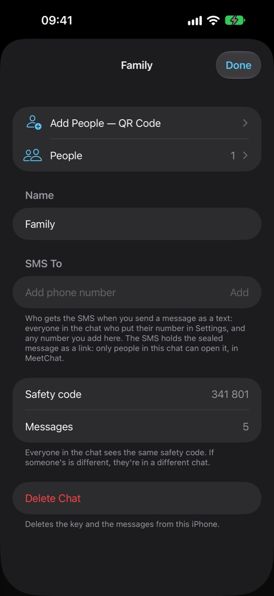
04Encryption
Every message is encrypted on your phone before it leaves, whatever the network. Text messages, the internet relay, other people’s phones and Meshtastic radios carry it sealed. Only a phone with the chat’s key can open it.
| Part | How it works |
|---|---|
| Chat key | 32 random bytes (256 bits), made on the phone that starts the chat. It is shared only through the QR code or invite link and is stored on the phone only (iPhone: Keychain; Android: locked with a key in the Android Keystore). |
| Sealing | AES-256-GCM, with keys derived from the chat key (HKDF-SHA256). The seal also covers the message’s header, so a carrier can’t change its expiry or anything else without it showing. |
| What’s hidden | Your name, the text, photos, files, places, reactions, edits, your number and the time sent. |
| What carriers see | A random message number, a short tag that tells MeetChat phones which chat it belongs to (it can’t be turned back into the key), when it expires, and its size. |
| Internet relay | Gets only sealed messages, on a topic name worked out from the key. It can’t read them or tell who wrote them. It does see the internet address of each phone that connects. |
Safety code
Every chat has a six-digit safety code, worked out from its key. Everyone in the same chat sees the same code: at the top of the chat, in chat info and in the invite. If someone’s code is different, they are in a different chat. Compare codes when you invite people.
What it doesn’t protect against
- Someone with the invite. Everyone with the key can read the whole chat and write in it. If an invite gets out, start a new chat and delete the old one.
- Names aren’t verified. Anyone in the chat could type any name. Recognise people by what they write.
- A lost key opens old messages. The key doesn’t change over time, so someone who gets it later can also read messages they collected earlier. Keep your phone locked.
- Others can tell a message was sent. Carriers see that a message exists, its size and roughly when it was sent, but not what it says.
- Radio chats (chapter 09) are ordinary Meshtastic channel messages, not end-to-end encrypted like your other chats. Each one says so at the top.
05Sending and reading
Open a chat, type a message and tap the Send arrow. The + next to the box adds a photo, a file or your location.
Messages are short, up to 140 bytes: about 140 letters without accents, fewer with accents or emoji. This keeps each message small enough for a single Meshtastic radio packet and a short text message. As you get close, a counter shows how much is left. Photos and files go only over the internet and phones nearby.
- Messages you receive show the sender’s name above, and the time and the network they came in on below: via Internet, via Radio, via Phone nearby or via SMS.
- Messages you send list every network they have gone out on so far, for example Internet · 2 phones · Radio. Until one takes it, the message shows Waiting for a network.
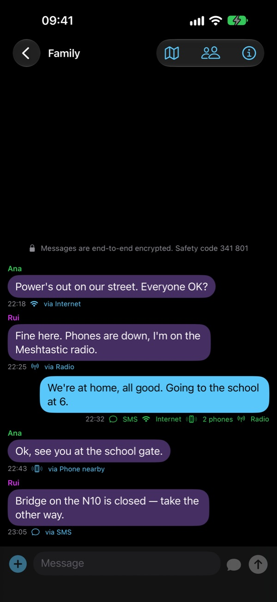
Reactions, reply, forward, edit, delete
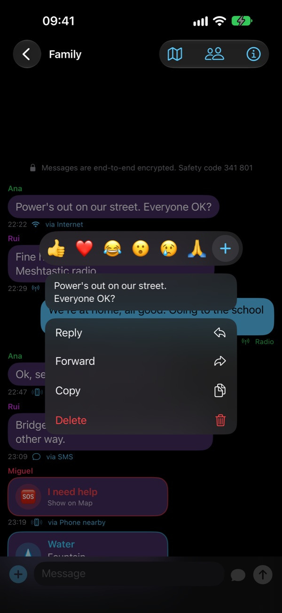
Touch and hold a message:
- Reactions: tap 👍 ❤️ 😂 😮 😢 🙏, or + for any emoji. Reactions show under the message, with how many people put each one; tap yours there to take it off.
- Reply: your answer shows the message it answers in a box above it. Tap the box to jump to the original.
- Forward: sends a copy to another chat (text, place, photo or file), marked Forwarded.
- Copy the text.
- Edit: your own text messages, up to 15 minutes after sending. Everyone sees the new text, marked Edited.
- Delete: Delete for Me takes it off your phone only. Delete for Everyone (your own messages, up to 48 hours after sending, while they’re still travelling) leaves “This message was deleted” on everyone’s phone.
- On your own messages: Send as SMS and Delivery.
Text messages can’t be changed. A message that went or came as an SMS can’t be edited or deleted for everyone: that copy is already in people’s messages apps.
Delivery: how far your message got
Tap one of your messages to see all four networks, including the ones it’s still waiting for, and who confirmed they got it. “Handed to” and “heard” mean the message reached the next phone or radio, not necessarily the person you’re writing to. Those carriers pass it on.
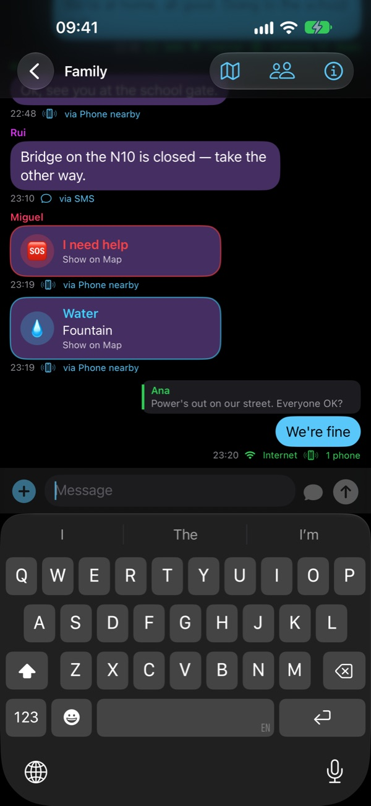
06Text messages
SMS needs only a mobile signal, which often comes back before mobile data does, and reaches people who are far away.
- Put your number in ⚙︎ Settings. MeetChat sends it, sealed, to the people in your chats, and they send you theirs. That’s how MeetChat knows who to text.
- Type your message and tap the message bubble next to Send. Your messages app opens with the text and the numbers of everyone in the chat who gave theirs, plus any number added in chat info under SMS To. Tap Send there.
- To send an earlier message by SMS, touch and hold it and tap Send as SMS.
The text holds the sealed message as a link, https://meetchat-app.github.io/m/#…. The person taps it and the message opens in the chat in MeetChat. What the link carries comes after the #, which never reaches the website. If the link can’t be tapped, copy the whole text, then in MeetChat tap ✎ → Join a Chat → Paste.
Someone only SMS reaches
If someone in the chat has lately only been heard by SMS (their phone has no data, for example), Send asks first: Only by SMS (to everyone in the chat) or Only Other Networks (internet, phones nearby and radio). That way a message never goes out twice, and nobody is left without it.
MeetChat can’t read your text messages, on iPhone or Android: a text reaches the chat when you tap its link. Whether an SMS is delivered depends on the phone network.
07Phones nearby
MeetChat phones find each other over Bluetooth and Wi-Fi with no network at all: no mobile signal, no router, no internet. iPhones and Android phones reach each other over Bluetooth.
- Every MeetChat phone is a carrier. It keeps every sealed message it meets, from any chat, and hands it to every MeetChat phone it meets later. A message can walk across town in a neighbour’s pocket.
- Carried messages expire after 48 hours. Each phone carries up to 500 messages, dropping the oldest first.
- On iPhone, messages pass between phones while MeetChat is open. On Android, MeetChat keeps running in the background with a notification, so it carries messages with the screen off.
08The map
Each chat has a map (the map icon at the top of the chat): where everyone who shares their place is, how they are, and pins anyone put there.
The round button at the bottom right opens Map Options:
- Share My Location: your place goes to the chat by itself as you move, until you turn it off. Only people in that chat see it.
- OK, Danger, Help: tells the chat how you are, with where you are. It shows as a coloured ring around your dot and as a message in the chat.
- Pin Where I Am or Pin Somewhere Else: for somewhere else, move the map until the pin in the middle is on the place, then tap ✓. Choose what it is: danger, shelter, water, first aid or meeting point, with a few words.
You can also touch and hold the map to put a pin there. Tap a person or a pin for details; anyone can take a pin off. The streets you’ve looked at with internet stay on the phone, so the map still shows them without it.
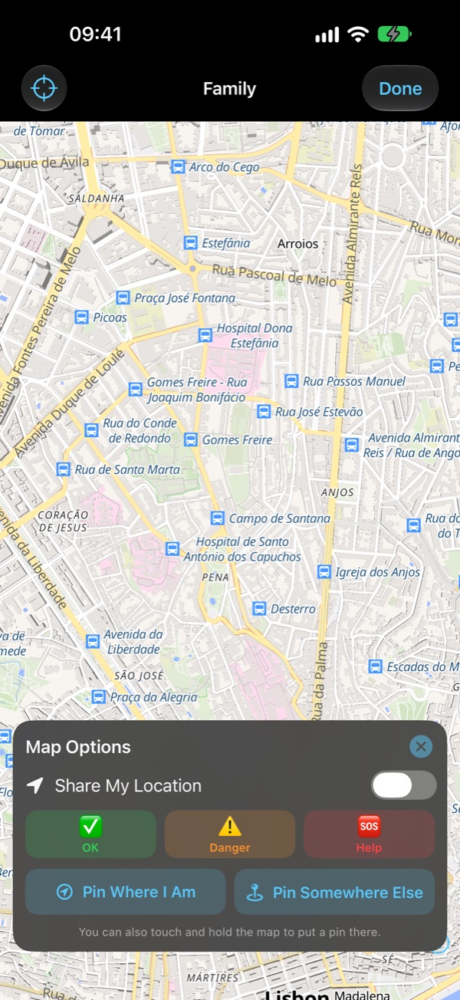
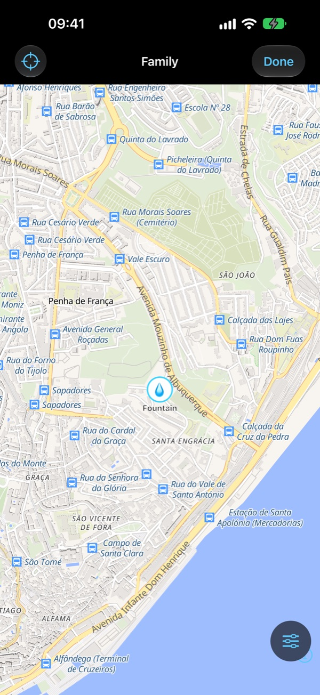
Positions shared live expire after 30 minutes without news. Over the radio, positions go only every 10 minutes and only when the radio is the only network, to save airtime.
09Meshtastic radio
A Meshtastic radio is a small, cheap LoRa radio that sends messages kilometres with no phone network, passing them from radio to radio.
- Switch the radio on and keep it close. Close the Meshtastic app, because a radio talks to one app at a time.
- In MeetChat open ⚙︎ Settings → Meshtastic Radio, tap Search for Radios, then your radio.
- If the phone asks for a PIN, it’s on the radio’s screen, or 123456 on radios without a screen.
- Tap Set Up for MeetChat: MeetChat sets the region for your country (you can change it), a mode and a channel for its encrypted messages.
When the radio is ready, the Radio icon turns green. MeetChat reconnects to it whenever it’s in range. Your messages go out on it sealed. Messages that reach your phone other ways are passed on to the radio too.
Radio chats
✎ → New Radio Chat makes a chat on an ordinary Meshtastic channel, so you can talk with people who use the Meshtastic app or a radio with a keyboard (like a T-Deck). These messages aren’t end-to-end encrypted: on the open channel anyone nearby with Meshtastic can read them; on a private channel, only radios with its key.
Licensed (amateur radio) mode. Amateur radio rules don’t allow encrypted messages, so MeetChat doesn’t send its sealed messages on a radio in that mode, and says so. Plain-text radio chats still work.
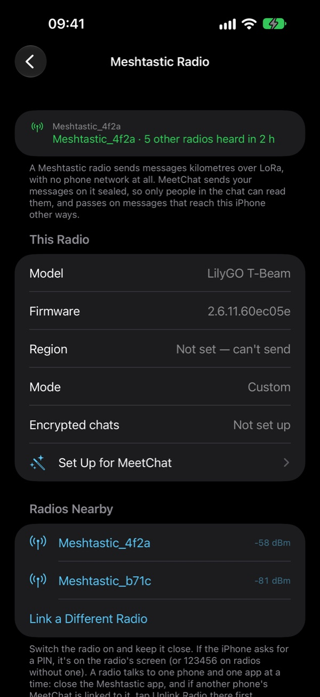
10Internet relay
Over Wi-Fi or mobile data, messages go through an ntfy relay server: the NeedToApp server unless you choose another.
- The relay only ever gets sealed messages, on a topic name worked out from the chat key (chapter 04).
- The NeedToApp server keeps messages for 48 hours (photos and files for 3), so a phone that was offline catches up when it comes back.
- Messages written while offline wait and go out as soon as there is internet again.
In ⚙︎ Settings → Internet Relay you can turn the internet off for MeetChat, or put in ntfy.sh or your own ntfy server. New chats use the server set there and take it in their invite, so everyone in a chat uses the same one. Chats you’re already in keep theirs.
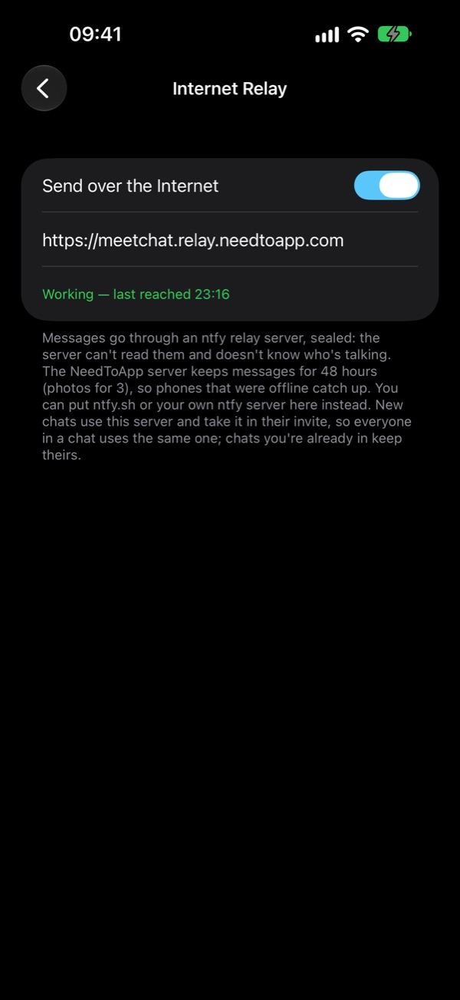
11Full Version
MeetChat is free for one chat, with no limit on people or messages. The Full Version, one payment and no subscription, gives you as many chats as you like.
It’s offered when you start or join a second chat, and in ⚙︎ Settings → Full Version. On another phone with the same Apple or Google account, tap Restore Purchase. Radio chats don’t count towards the limit.
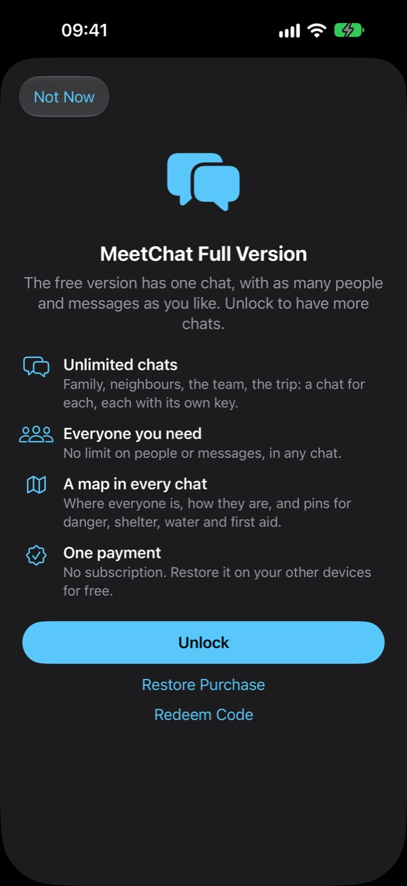
12Troubleshooting
| Problem | Try this |
|---|---|
| SMS is grey (unavailable) | Put your phone number in ⚙︎ Settings. A phone with no SIM card can’t send SMS. |
| The SMS goes to nobody | The others haven’t put their number in Settings yet, or haven’t been heard since. Add numbers by hand in chat info → SMS To. |
| Tapping an SMS link opens the browser | Tap Open in MeetChat on the page. Make sure MeetChat is installed on that phone. |
| No MeetChat phones in range | Both phones need MeetChat open (iPhone), Bluetooth on, and Local Network (iPhone) or Nearby devices (Android) allowed. |
| “This message is for a chat you’re not in” | The SMS link belongs to a chat you haven’t joined. Ask for an invite. |
| Safety codes don’t match | You’re in different chats. Join again from the right QR code. |
| Relay not answering | Check the server in ⚙︎ Settings → Internet Relay, or tap Use the NeedToApp server. Messages wait and go out later. |
| Radio stays on “Looking for…” | Switch the radio on and bring it close. Close the Meshtastic app. If needed, unlink and link the radio again. |
| The radio doesn’t send encrypted chats | It may be in licensed (amateur radio) mode: turn that off in the Meshtastic app. |
| Can’t start a second chat | The free version has one chat: see chapter 11. |
13Quick reference
| To… | Do this |
|---|---|
| Start a chat | ✎ → New Chat → name → Create |
| Invite someone | Chat → people icon → Add People |
| Join a chat | ✎ → Join a Chat → Scan QR Code, or tap the invite link |
| Join from copied text | ✎ → Join a Chat → Paste |
| Send | Type → arrow |
| Send as SMS | Type → message bubble next to the arrow |
| React, reply, forward, edit, delete | Touch and hold the message |
| See where a message went | Tap your message |
| Share where you are, say how you are, put a pin | Chat → map → round button at the bottom |
| Check the safety code | Top of the chat, or chat → ⓘ |
| Your number for SMS | ⚙︎ Settings → Your Phone Number |
| Link a Meshtastic radio | ⚙︎ Settings → Meshtastic Radio → Search for Radios |
| Change the relay server | ⚙︎ Settings → Internet Relay |
| Switch a network off | Tap the network icons → touch and hold a network |
| Delete a chat | Chat → ⓘ → Delete Chat |
MeetChat has no account, no ads and no tracking. Keys and messages stay on your phone. Messages leave it only sealed, and only on their way to the people in your chats. The internet relay keeps sealed messages for up to 48 hours so phones that were offline catch up; it can’t read them. Privacy policy: meetchat-app.github.io/privacy.
14Safety and legal
Not an emergency service. MeetChat doesn't replace emergency services. If you or someone else is in danger, call 112 (or your local emergency number) whenever you can.
Radio rules. A Meshtastic® radio sends on licence-free bands that have limits by country. MeetChat sets the radio's region from your country (you can change it) and never raises its power or its airtime limits. If a radio is in licensed (amateur radio) mode, MeetChat doesn't send its encrypted messages on it, because amateur radio rules don't allow encryption; plain-text radio chats still work.
Trademarks. Meshtastic® is a registered trademark of Meshtastic LLC. MeetChat is not affiliated with or endorsed by the Meshtastic project. MeetChat contains no Meshtastic code; it talks to the radio over its standard Bluetooth interface.
Maps. Map data © OpenStreetMap contributors (ODbL). Tiles and style by OpenFreeMap, © OpenMapTiles. Maps drawn with MapLibre (BSD licence). All open-source licences are in the app: ⚙︎ Settings → About MeetChat.
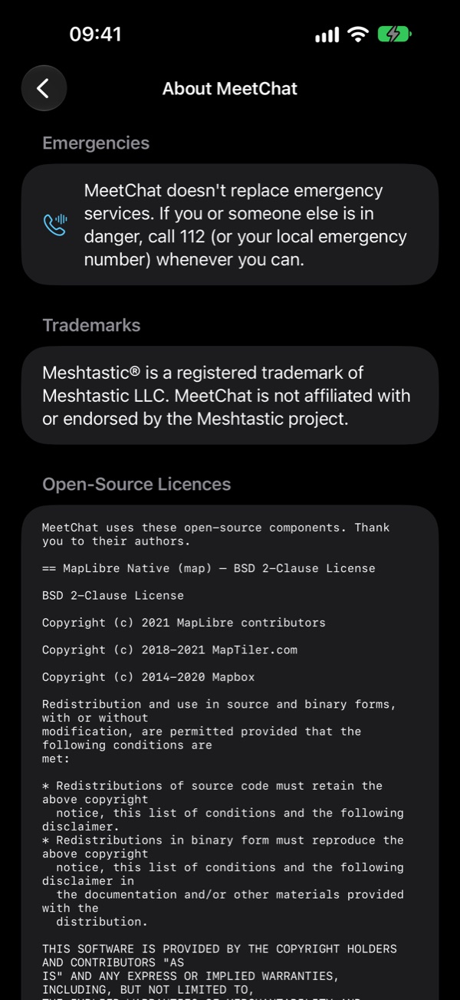